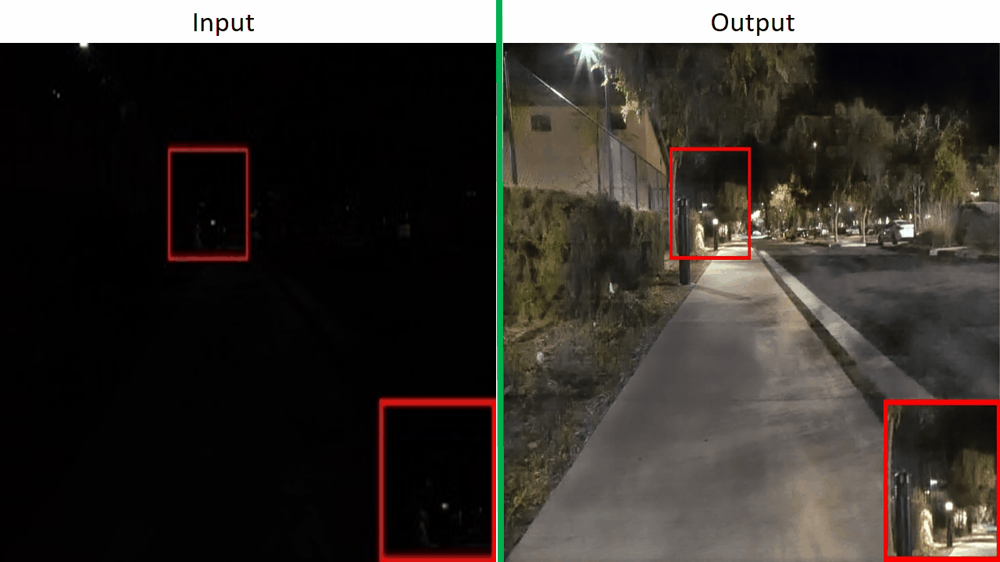
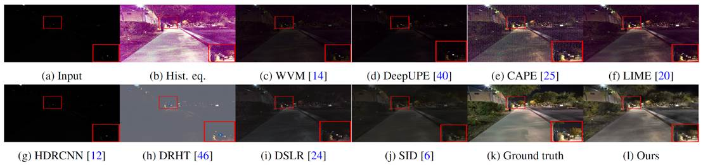
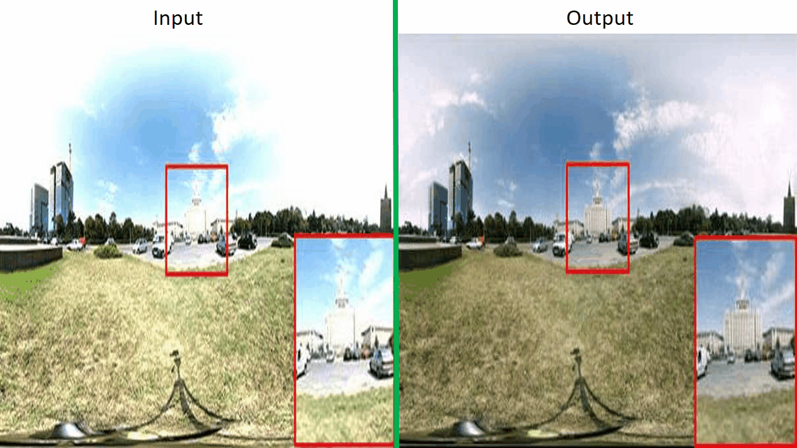
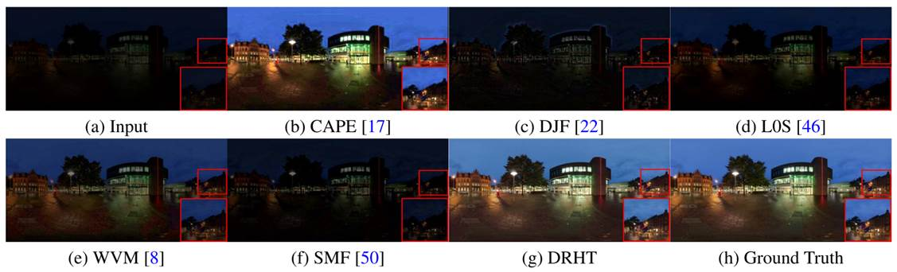

|
Low-light Image Analysis
|
|
Low-light imaging is often needed for various purposes, such
as surveillance, photography and autonomous driving. In
particular for autonomous driving, day-time and night-time
each roughly contributes to 50% of the time over a year, and
it is equally important for computer vision techniques
developed for day-time scenes to work at night-time scenes.
Unfortunately, low-light images typically contain very dark
regions, which may suffer from under-exposure problems (i.e.,
their values are very close to zero), while night-time images
may suffer from both under-exposure as well as over-exposure
problems (i.e., their values may be very close to either zero
or one). Enhancing these images or processing them with
existing computer vision algorithms often do not work.
In this project, we are developing techniques to process
low-light images. Our research is to address this problem from
two directions. The first is to consider how to enhance these
images to improve their visibility. The second is to
investigate how to improve existing computer vision algorithms
for direct analyses of low-light images.
|
|
Learning to Restore Low-light Images via
Decomposition-and-Enhancement
[paper] [suppl] [model]
[dataset]
Ke Xu, Xin Yang*, Baocai Yin, and Rynson Lau
Proc. IEEE CVPR (CCF A), June 2020
|
|


While existing methods ((c) to (j)) generally
fail to enhance the input noisy low-light image
(a), our method produces a sharper and clearer
result with objects and details recovered
(l).
|
|
|
Input-Output:
Given an input practical low-light
image, which often
comes with a significant amount of noise due to the low
signal-to-noise ratio, our network enhances its
brightness while at the same time suppressing its noise
level, to produce an enhanced clear image.
Abstract.
Low-light images typically suffer from two problems.
First, they have low visibility (i.e., small pixel
values). Second, noise becomes significant and disrupts
the image content, due to low signal-to-noise ratio.
Most existing lowlight image enhancement methods,
however, learn from noise-negligible datasets. They rely
on users having good photographic skills in taking
images with low noise. Unfortunately, this is not the
case for majority of the low-light images. While
concurrently enhancing a low-light image and removing
its noise is ill-posed, we observe that noise exhibits
different levels of contrast in different frequency
layers, and it is much easier to detect noise in the
low-frequency layer than in the high one. Inspired by
this observation, we propose a frequency-based
decomposition-and-enhancement model for low-light image
enhancement. Based on this model, we present a novel
network that first learns to recover image objects in
the low-frequency layer and then enhances high-frequency
details based on the recovered image objects. In
addition, we have prepared a new low-light image dataset
with real noise to facilitate learning. Finally, we have
conducted extensive experiments to show that the
proposed method outperforms state-of-the-art approaches
in enhancing practical noisy low-light images.
|
|
|
Cascaded Network with Deep Intensity Manipulation for
Scene Understanding
Xin Yang, Haoran Wang, Shaozhe Chen, Xinglin Piao,
Dongsheng Zhou, Qiang Zhang, Baocai Yin, Xiaopeng Wei
Journal of Visualization and Computer
Animation, 30(3-4),
2019
|

Limitations of existing enhance algorithms. We
choose ICNet to generate segmentation results.
The quality of segmentation results is illy
influenced by the limited illustration. Existing
enhancement algorithms cannot perform
optimization and, on the contrary, worsen the
segmentation results. (a) Low-light image. (b)
Low-light image enhancement via illumination map
estimation (LIME). (c) Simultaneous reflectance
and illumination estimation (SRIE). (d)
Ours
|
|
|
Input-Output:
Given an input low-light image, our network produces an
enhanced image with lost details recovered.
Abstract:
Scene understanding is essential to robotic navigation
and autonomous driving as it provides semantic
information to their controlling system. However, it
will fail when processing low-light images/videos
captured under adverse weather or at night use
state-of-the-art scene understanding methods. A naive
way to directly infer semantics from low-light images is
ill posed because the low-light condition distorts pixel
intensities and buries details. In order to address this
problem, we propose the Deep Intensity Manipulation
Network (DIMNet), which could relight the input images
and recover the details, and combine the DIMNet with a
scene understanding network to get a cascaded network to
learn the semantics from low-light images. Through
learning pixel intensity manipulation, our method can
generate images not only visually pleasing but also
practical for scene understanding. Qualitative and
quantitative experiments demonstrate that the proposed
method is effective and robust for both synthetic and
real-world images.
|
|
|
Image Correction via Deep Reciprocating HDR
Transformation
[paper] [suppl] [code] [dataset]
Xin Yang, Ke Xu, Yibing Song, Qiang Zhang, Xiaopeng
Wei, and Rynson Lau
Proc. IEEE CVPR (CCF A), June 2018
|


Image correction results on an underexposed
input. Existing LDR methods have the limitation
in recovering the missing details, as shown in
(b)-(f). In comparison, we recover the missing
LDR details in the HDR domain and preserve them
through tone mapping, producing a more favorable
result as shown in (g).
|
|
|
Input-Output:
Given an input low-light image, our network produces an
enhanced image with lost details recovered.
Abstract:
Image correction aims to adjust an input image into a
visually pleasing one. Existing approaches are proposed
mainly from the perspective of image pixel manipulation.
They are not effective to recover the details in the
under/over exposed regions. In this paper, we revisit
the image formation procedure and notice that the
missing details in these regions exist in the
corresponding high dynamic range (HDR) data. These
details are well perceived by the human eyes but
diminished in the low dynamic range (LDR) domain because
of the tone mapping process. Therefore, we formulate the
image correction task as an HDR transformation process
and propose a novel approach called Deep Reciprocating
HDR Transformation (DRHT). Given an input LDR image, we
first reconstruct the missing details in the HDR domain.
We then perform tone mapping on the predicted HDR data
to generate the output LDR image with the recovered
details. To this end, we propose a united framework
consisting of two CNNs for HDR reconstruction and tone
mapping. They are integrated end-to-end for joint
training and prediction. Experiments on the standard
benchmarks demonstrate that the proposed method performs
favorably against state-of-the-art image correction
methods.
|
|